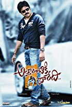

Pawan Kalyan
Pawan Kalyan (born Konidela Kalyan Babu; 2 September 1968 or 1971) is an Indian actor, politician, filmmaker, and philanthropist. He primarily works in Telugu cinema. He is the recipient of a Filmfare Award, a SIIMA Award, a CineMAA Award and a Santosham Film Award. He has featured in Forbes India's Celebrity 100 list in the years 2013, 2017, and 2018.His elder brother was an actor-politician, Chiranjeevi. Even Chiranjeevi was there in his debut film in 1996 named 'Akkada Ammayi Ikkada Abbayi' . In 1998 his movie Tholi Prema won National Film Award for Best Feature Film in Telugu . He is popular as a Power Star among his fans; Kalyan is known for his movies such as Gokram Rosita, Swagatam, Toriprema, Tamdu, Badri, Kushi, Jarsa, Gabersin, Goparagopara, and Atalinticida Lady. He won the Best Actor Filmfare Award-Gabbar Singh's Telugu version; Attarintiki Daredi held the record for the highest-selling Telugu film .
In April 2001, soft-drink giant Pepsi, announced him as its brand ambassador, making him the first South Indian to endorse the popular soft-drink
n January 2017, Kalyan agreed to take up the role of the brand ambassador for hand loom weavers in Andhra Pradesh and Telangana.
In August 2017, Kalyan was asked to be the brand ambassador to JEEVAN DAAN, an initiative started for organ donation by government of Andhra Pradesh.
Jana Sena or Jana Sena Party (JSP) (transl. People's Army Party)[5] is an Indian political party based in the states of Andhra Pradesh and Telangana. It is founded by Telugu actor, Pawan Kalyan on 14 March 2014.
-
On 12 March 2014, Pawan Kalyan submitted the application to register the party name.[7] Kalyan formally launched the party at the HITEC City business district in Madhapur, Hyderabad, on 14 March with a massive meeting.[6][8] This was followed by another public gathering and meeting in Vizag where he launched his book Ism. The party was approved by the Election Commission on 11 December 2014.
-
The main goal of Jana Sena is to question any type of corruption in government functioning and organizations and to protect basic rights of people. JSP follows 7 basic ideals promoted as Ideals of JanaSena (JanaSena Sidhanthalu in Telugu)
-
.Social consciousness without caste
.Politics without religious discrimination
.Reverence for linguistic diversity
.Protection of our traditions and culture
.Nationalism without neglecting regional aspirations
.Relentless fight against corruption
.Progress that preserves the environment
.Fomration
.Ideology
-
About
Other works
Brand endorsements
Political Career
Top 5 Famous movies
-

Attarintiki Daredi
The scion of a powerful family is tasked with retrieving an estranged family member.
Director: Trivikram Srinivas | Stars: Pawan Kalyan, Samantha Ruth Prabhu, Pranitha, Boman Irani
-
Jalsa
Sanjay, a young man, joins an extremist group after having had a troublesome childhood. A policeman decides to guide him towards a far better path and in doing so, his daughter falls crazy with Sanjay.
Director: Trivikram Srinivas | Stars: Pawan Kalyan, Ileana D'Cruz, Mukesh Rishi, Kamalinee Mukherjee
-
Kushi
While playing matchmaker to a pair of their friends, two young university students begin developing feelings for each other.
Director: S.J. Suryah Stars: Pawan Kalyan, Bhoomika Chawla, Sivaji, Rajan P. Dev
-
Tholiprema
While Balu falls in love with Anu at first sight, she is unaware of his emotions. The difficulties that he needs to face to win her heart, form the rest of the story.
Director: A. Karunakaran Stars: Pawan Kalyan,Kirti Reddy, Vasuki, Mohammad Ali
-

Thammudu
An aimless student is banished from his home by his father. When his brother, a boxing champion, gets injured, the student must step up and take his brother's place
Director: P.A. Arun PrasadStars: Preeti Jhangiani, Aditi Govitrikar, Achyuth, Pawan Kalyan